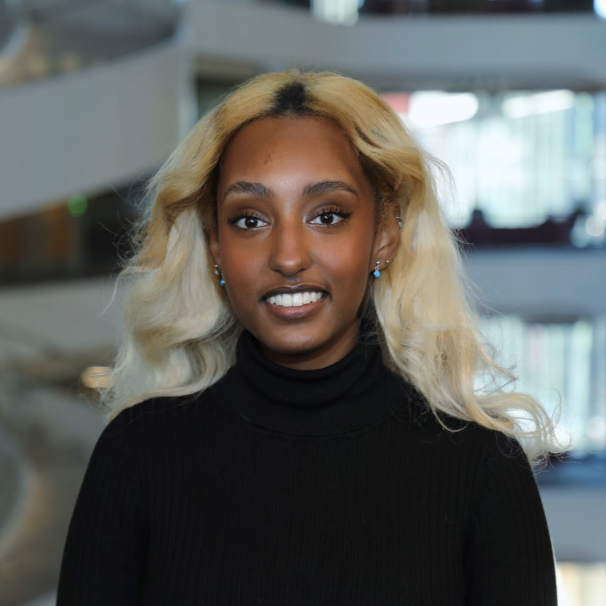
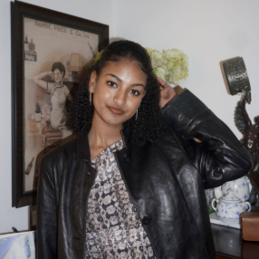
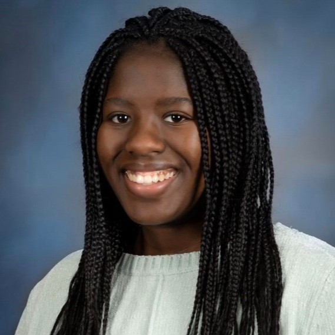
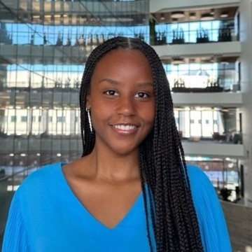
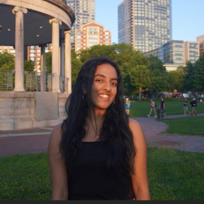
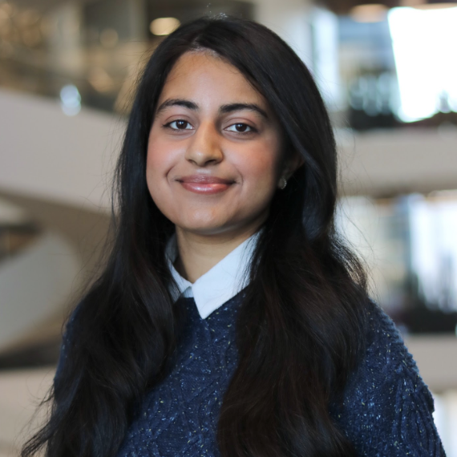
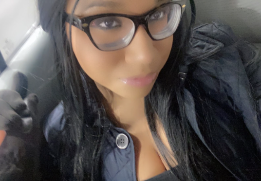
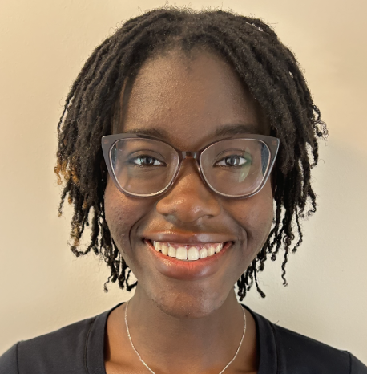
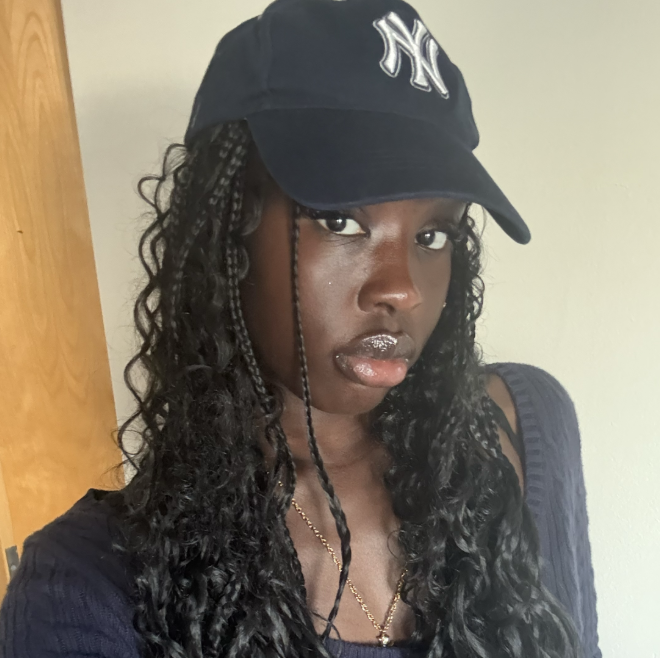

Blen Yohannes
Position: President
4th Year | Health Sciences
Fun Fact: I'm interested in global maternal health!

Elda Gobena
Position: Co-Vice President
4th Year | Behavioral Neuroscience
Fun Fact: I have a minor in Data Science!

Siima Machayo
Position: Co-Vice President
4th Year | Behavioral Neuroscience
Fun Fact: I'm interned at the White House!

Imani Mbusu
Position: Secretary
3rd Year | Behavioral Neuroscience
Fun Fact: I have an EMT certification!

Eepsitha Muppasani
Position: Treasurer
3rd Year | Biology
Fun Fact: I'm a certified nursing assistant!
Diya Ganesh
Position: Web Chair
3rd Year | Data Science & Behavioral Neuroscience
Fun Fact: I've been to 15 countries and 22 states!

Meera Shukla
Position: Programs Coordinator
3rd Year | Behavioral Neuroscience
Fun Fact: I'm a lab and medical assistant!

Alyvia Woods
Position: Outreach Coordinator
3rd Year | Biology
Fun Fact: I speak Mandarin!

Mokeira Gekonge
Position: Communications Coordinator
2nd Year | Behavioral Neuroscience
Fun Fact: I'm passionate about equitable healthcare!
Vivian Lin
Position: Co-Mentorship Coordinator
4th Year | Biochemistry
Fun Fact: This is my third year in COSSDAC!

Margaret Mading
Position: Co-Mentorship Coordinator
3rd Year | Behavioral Neuroscience
Fun Fact: I love exploring Boston and being in nature!